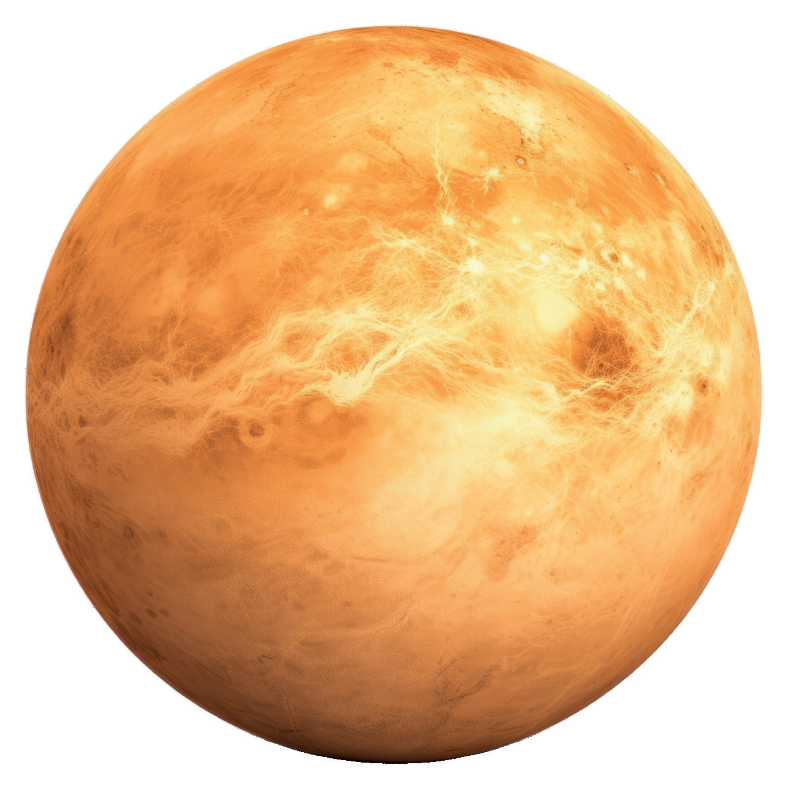
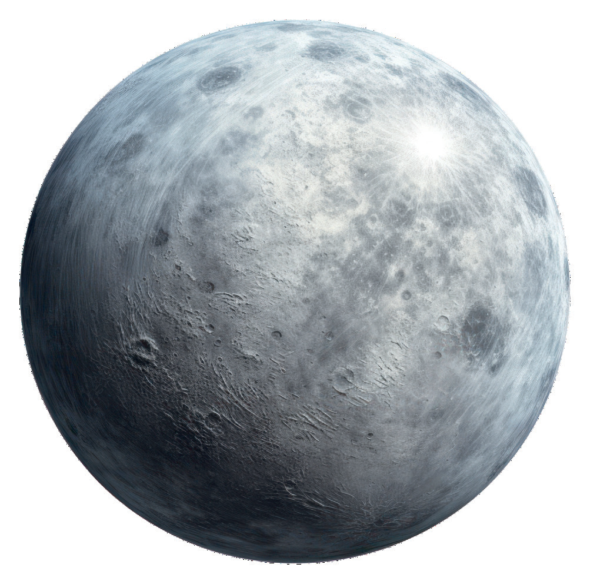
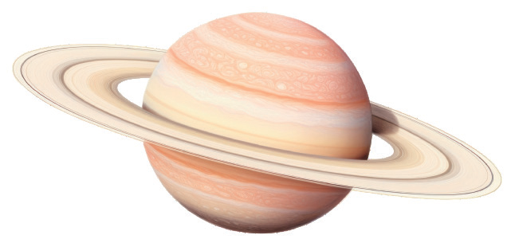

подсказывает, какая манера поведения будет наиболее эффективна именно для вас.
Действовать смело и без промедления — это ваш главный профессиональный принцип. Не ждите разрешения или идеальных условий: берите инициативу в свои руки.
Ваша личность сама по себе — главный инструмент. Люди пойдут за вами как за человеком.
Эти периоды могут открывать новые возможности и важные встречи. Обратите внимание на то, как меняются ваши приоритеты.
Например:
Если планет несколько, то необходимо провести анализ, какая из них сильнее, и грамотно синтезировать все эти показатели.
| Планета | Что даёт |
|---|---|
| ☉Солнце | Ваша личность сама по себе — главный инструмент. Стремитесь к позициям, где вы видны: руководящие роли, публичные выступления. |
| ☽Луна | Карьера, глубоко связанная с эмоциями и людьми. Доверяйте интуиции в выборе пути. |
| ♀Венера | Привлекательность и эстетическое чутьё ведут вверх по карьерной лестнице. Признание приходит через красоту и обаяние. |



Именно этому мастерству мы будем обучаться на курсе «Астрология: от нуля до профессионала».
Там вы научитесь полноценно расшифровывать профессиональное призвание человека.
Знаки (как?) — это 12 типов энергии, которые создают образ планеты, формируют её имидж и стиль.
Планеты (кто? что?) — функции психики, архетипы, действующие лица в карте.
Дома (где?) — сферы жизни.
Аспекты (меняет/добавляет качеств планете) — взаимоотношения, в которых состоят планеты.
Лунные функции психики:
Этот аспект даёт талант быть простым и открытым, быть конкретным и понятным, общительным, лёгким на подъём.
Ощущение эмоциональной безопасности и спокойствия неразрывны с функциями Меркурия.
Та стихия, которая наберёт больше баллов — и будет ведущей.